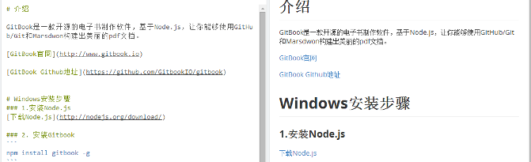
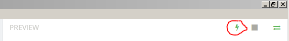

GitBook是一款开源的电子书制作软件，基于Node.js，让你能够使用GitHub/Git和Marsdwon构建出美丽的pdf文档。
npm install gitbook -g把C:\Users\username\AppData\Roaming\npm加入到系统环境变量中
使用Gitbook Editor新建Book，用Markdown编辑
1: Gitbook Editor提供实时预览功能

2: 启动Preview Server，通过浏览器访问http://localhost:8004

site
gitbook build ./repository -f site --output=./outputFolderpage
gitbook build ./repository -f page --output=./outputFolderjson
gitbook build ./repository -f json --output=./outputFolderebook
gitbook build ./repository -f ebook --output=./outputFoldergitbook pdf ./repository -o file.pdf